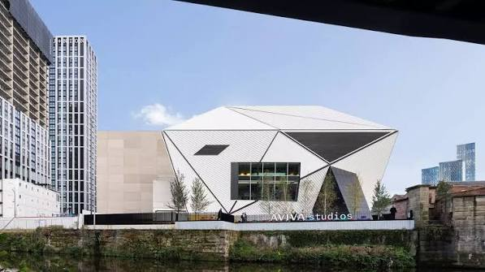

Access and journey planning
Know what is confirmed before you book
This guide separates confirmed event information from details that still need checking. We will not guess about venue facilities, route measurements or equipment compatibility.
Last reviewed: 3 November 2026 · Contact: contact@mancunianity.uk
Before booking
Mancunianity Flows: What Can a River Remember? is an audio-theatre experience beside the River Irwell with supplied wireless headphones and a 15-minute musical finale. The complete experience usually lasts approximately 65 minutes. Please allow up to 70 minutes, including the final 15-minute musical finale.
Anyone aged 17 or under must attend with a responsible adult aged 18 or over. Children and young people must remain with their accompanying adult throughout the experience. Accompanying adults are responsible for their supervision and safety.
Some practical details are still being checked, including route measurements, nearby facilities and suitability for different mobility equipment. The sections below explain what is known and what information is not yet available. If you have an individual access requirement, contact us before booking so we can discuss it with you.
Meeting point
The Social, Aviva StudiosWater Street
Manchester
M3 4JQ
United Kingdom
Meet at The Social, Aviva Studios. This is the meeting and check-in point for Mancunianity Flows.

Getting there
The address is The Social, Aviva Studios, Water Street, Manchester M3 4JQ, United Kingdom. Accessible drop-off arrangements, nearest accessible parking and public-transport directions have not yet been confirmed. Contact us before travelling if you need any of these details.
Gathering and check-in
Performances run on Saturday 19, Sunday 20 and Monday 21 December 2026, with a morning and afternoon performance each day.
Please arrive at The Social, Aviva Studios, from 10:00 am for the 10:30 am performance, or from 1:00 pm for the 1:30 pm performance.
The 30-minute arrival period allows time for check-in and wireless headset collection. We recommend checking in no later than 10:25 am for the morning performance or 1:25 pm for the afternoon performance.
The walking group leaves the meeting point when the performance starts at 10:30 am and 1:30 pm.
The morning performance should finish at approximately 11:35 am and may run until about 11:40 am. The afternoon performance should finish at approximately 2:35 pm and may run until about 2:40 pm. Finish times are approximate.
If you arrive after the performance has started, you may be able to catch up and join the group because the route is short. However, joining the group and receiving a wireless headset cannot be guaranteed. Late visitors should follow directions from Mancunianity or Aviva Studios staff where available.
The complete experience usually lasts approximately 65 minutes. Please allow up to 70 minutes, including the final 15-minute musical finale.
Route distance and surface
The traffic-free pedestrian route is less than a quarter of a mile. More detailed surface, width, gradient, camber, riverside barrier and service-access information is not available. Contact us if these details affect your decision to attend. Traffic-free does not mean that no public pedestrians, bicycles or service access will be present.
Children receive a spotting activity during the experience.
Wheelchairs and mobility equipment
The walk is step-free, but suitability for every wheelchair, powered wheelchair, mobility scooter or other mobility equipment has not been confirmed. Turning space, route widths, gradients, passing places and drop-off arrangements are not yet available. Please contact us before booking to discuss your equipment and requirements.
Seating and rest
The final 15 minutes are an interactive riverside musical finale. Finale seating is on outdoor concrete seat blocks, so visitors may wish to bring a small waterproof cushion or folded sit mat for additional comfort. Rest stops during the walk and sheltered places to pause are not confirmed.
Headphones and hearing access
Wireless headsets are supplied and cleaned between uses. No app needs to be downloaded, and visitors do not need to bring personal audio equipment. Volume adjustment, headset fit, hearing-aid and neck-loop compatibility, transcripts available during the walk, BSL and other interpretation have not been confirmed. No equivalent alternative to the headphone audio has been confirmed for the live experience.
If you need to know whether the audio can work for you, contact us before booking. The website can provide alternative-format information on request; that does not mean a transcript or interpretation is available during the event.
Vision and visual information
Large-print, plain-text and audio versions of information can be requested by email. A route description for screen readers, tactile or large-print route materials, sighted-guide support and visual descriptions during the experience are not yet available. Contact us to discuss what information you need before booking.
Sensory information
The experience uses supplied wireless audio and ends with a live musical finale. Specific sound levels, sudden sounds, opportunities to pause, quiet waiting space and a sensory guide are not yet available. Contact us before booking if you would like to discuss sound or other sensory requirements.
Toilets
The location and availability of accessible toilets or Changing Places facilities during the visit are not yet available. Please contact us before booking if toilet access affects your plans.
Assistance dogs
The event’s assistance-dog arrangements, including any venue or route requirements, are not yet available. Contact us before booking so we can discuss your requirements.
Weather
The experience continues in most weather, so come prepared for the forecast with warm, waterproof clothing and suitable footwear.
If severe weather makes a performance unsafe, affected ticket holders will be contacted by email and offered a transfer to another performance, subject to availability, or a refund.
Early exit and emergencies
How to leave the route early, rejoin the group, reach a vehicle, or get assistance in an emergency is not yet available. Contact us before booking if you may need an early-exit plan. Do not assume that a particular exit, vehicle access or staff procedure is available.
Access-companion tickets
Access Companions attend free, but a free ticket must be booked.
Contact for individual requirements
For general, booking or visitor enquiries, email contact@mancunianity.uk. You can ask about any unconfirmed detail on this page or explain the information you need to decide whether the experience is right for you. Please do not include sensitive medical information unless it is necessary to your question.
Mancunianity Flows is organised by Nakib Narat.
Tickets and booking
Adult £15 · Senior aged 65 and over £12 · Child or young person aged 3–17 £5 · Under three: free, but a free ticket must be booked · Access Companion: free, but a free ticket must be booked · Family Bundle £38 for two adults and two children or young people aged 3–17.
Under-threes and Access Companions attend free, but a free ticket must still be booked for every person attending. Anyone aged 17 or under must attend with a responsible adult aged 18 or over. Children and young people must remain with their accompanying adult throughout the experience. Accompanying adults are responsible for their supervision and safety.
Confirm the selected performance and ticket availability in TryBooking before completing your booking.